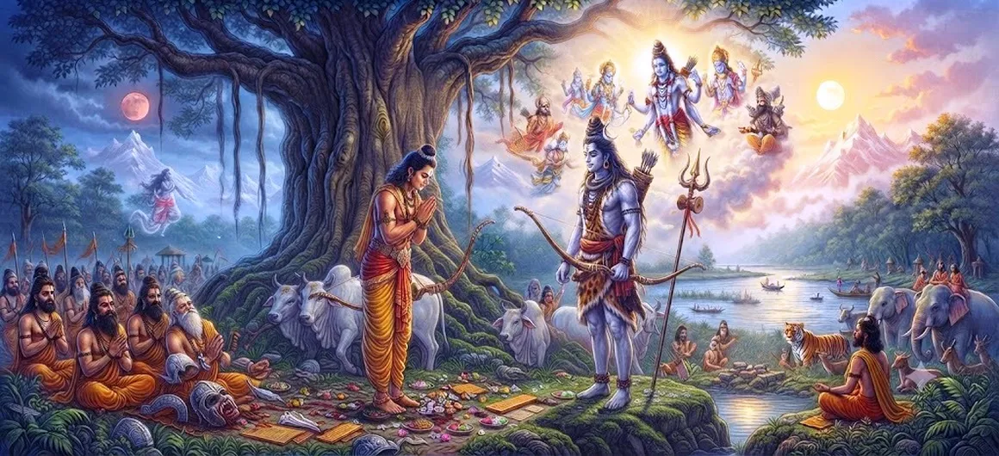

The Kirata–Arjuna Dialogue
Chapter 40 of the Shatarudra Samhita presents the sacred Kirata–Arjuna Dialogue. Following the events surrounding the demon Muka, Arjuna encounters the mysterious Kirata and enters an exchange that forms a central stage in the unfolding divine narrative.
The encounter tests more than physical strength. It brings Arjuna's courage, discipline, discernment, and devotion into focus while gradually pointing toward the deeper identity of the Kirata.
The dialogue therefore stands as an important bridge between Arjuna's penance and the fuller revelation of Lord Shiva's Kirata incarnation.
Chapter 40 Highlights
The Kirata Appears
The narrative moves into the sacred encounter between Arjuna and Shiva in the Kirata form.
Arjuna's Encounter
Arjuna encounters the mysterious hunter and is drawn into a profound test of strength, discernment, and devotion.
The Sacred Dispute
The encounter develops into a dispute that challenges Arjuna's understanding and determination.
Trial of Courage
Arjuna's courage and spiritual discipline are tested through the unfolding encounter.
Divine Recognition
The episode prepares the way for recognition of the divine reality behind the Kirata form.
Path to Shiva's Revelation
The dialogue serves as a bridge toward the fuller revelation of Shiva as Kirata.
Core Topics in This Chapter
The Meeting of Kirata and Arjuna
After the events surrounding Muka, the narrative reaches the meeting between Arjuna and the mysterious Kirata. The hunter's presence carries a deeper significance, although Arjuna must first encounter the situation as a demanding test.
The Kirata–Arjuna Dialogue
The dialogue between Kirata and Arjuna becomes a central moment in the sacred sequence. Their exchange brings questions of courage, authority, discernment, and spiritual purpose into the foreground.
The Test of Arjuna
Arjuna's previous penance has prepared him for a deeper test. The encounter challenges him not merely to display strength, but to remain steadfast and discerning when confronted with an unexpected divine circumstance.
Arjuna's Discernment and Devotion
The encounter reveals the importance of looking beyond appearances. Arjuna's spiritual journey requires him to combine heroic confidence with humility and the capacity to recognize a higher purpose.
The Divine Meaning of the Encounter
The Kirata form is not presented merely as an ordinary hunter. The encounter points toward a divine mystery in which the seeker is tested before receiving deeper recognition and grace.
The Way Toward Shiva's Kirata Revelation
Chapter 40 prepares the narrative for the fuller revelation of Shiva as Kirata. The dialogue and its challenges therefore form an essential part of the sacred progression surrounding Arjuna's penance.
Key Teachings of Chapter 40
Look Beyond Appearances
A spiritual seeker should avoid judging a person or situation only by outward appearance.
Let Discipline Guide Courage
Courage becomes meaningful when it is supported by self-control and spiritual discipline.
Recognize the Divine Test
Unexpected challenges may become opportunities to reveal the depth of one's spiritual preparation.
Remain Humble in Strength
Strength should be joined with humility, especially when the truth of a situation is not yet fully visible.
Persevere Through Uncertainty
Spiritual progress often requires patience when circumstances do not immediately make sense.
Prepare for Divine Recognition
A disciplined heart becomes more capable of recognizing grace when it appears in an unexpected form.
Spiritual Reflection
The Kirata–Arjuna Dialogue invites reflection on the difference between appearance and deeper reality. Arjuna's spiritual preparation has brought him to a point where courage alone is not enough. He must remain attentive, humble, discerning, and receptive to the possibility that an ordinary-looking encounter may carry a divine purpose.
Living the Message
In daily life, do not judge every person or situation only by its outward appearance. Pause, observe carefully, and allow understanding to deepen before making a final judgment.
When a challenge tests your patience or confidence, remember the discipline built through steady practice. Courage becomes more powerful when it is guided by self-control and clarity.
Remain humble when you believe you already understand a situation. Spiritual growth often begins when we become willing to see beyond our first impression.
Key Spiritual Concepts
The hunter form associated with Shiva in the sacred encounter with Arjuna.
Sacred dialogue or meaningful exchange through which understanding unfolds.
Spiritual austerity and disciplined practice that prepares the seeker for deeper realization.
Devotion and loving surrender toward the Divine.
Discernment, especially the ability to distinguish deeper truth from surface appearance.
Divine grace that becomes available when the seeker is prepared to receive it.
Chapter Summary
Shatarudra Samhita Chapter 40 presents the Kirata–Arjuna Dialogue as a significant continuation of the narrative following the killing of Muka. Arjuna, prepared by his previous penance, encounters the mysterious Kirata and is drawn into a profound test involving courage, discernment, humility, and devotion. The exchange points toward a deeper divine purpose behind the encounter and prepares the narrative for the next chapter, which concerns Lord Shiva's incarnation as Kirata.
Frequently Asked Questions
1. What is the main subject of Shatarudra Samhita Chapter 40?
Chapter 40 presents the Kirata–Arjuna Dialogue, continuing the sacred narrative after the killing of the demon Muka.
2. Who are the central figures in the Kirata–Arjuna Dialogue?
The central figures are Arjuna and Shiva appearing in the Kirata, or hunter, form.
3. Why is the Kirata–Arjuna Dialogue important?
The dialogue is a major stage in the sacred encounter between Arjuna and Shiva and advances the narrative toward the revelation of Shiva's Kirata incarnation.
4. How does Chapter 40 follow Chapter 39?
Chapter 39 describes the killing of Muka, while Chapter 40 continues the sequence with the Kirata–Arjuna Dialogue.
5. What spiritual lesson is associated with the dialogue?
The episode points toward humility, perseverance, discernment, and the deeper purpose of spiritual discipline when facing a divine test.
6. What comes after Chapter 40?
The next chapter is Lord Shiva's Incarnation as Kirata.
“Beyond the visible form, the prepared heart learns to recognize the deeper purpose of the divine encounter.”
Continue Through Shatarudra Samhita
Chapter 40 presents the sacred Kirata–Arjuna Dialogue and leads into the next account of Lord Shiva's Kirata incarnation.